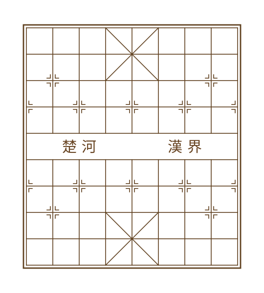
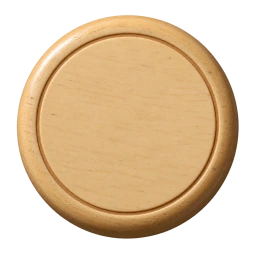

<!doctype html><html lang="zh-CN"><meta charset="utf-8"><meta name="viewport" content="width=device-width,initial-scale=1"><title>中国象棋 · 复古素材</title><style>*{box-sizing:border-box}body{margin:0;background:#4a5f7f;color:#fff3d4;font:14px serif}main{max-width:1040px;margin:auto;padding:24px}h1{font-size:24px;font-weight:normal}a{color:#ffe7a1}.layout{display:grid;grid-template-columns:minmax(0,540px) 1fr;gap:30px}.board{width:100%;aspect-ratio:9/10;background:url(board-wood.webp) center/100% 100%;position:relative}.board>img{width:100%;height:100%}.piece{display:inline-block;width:84px;height:84px;position:relative;flex-shrink:0}.piece img{position:absolute;inset:0;width:100%;height:100%;object-fit:contain}.pieces{display:flex;flex-wrap:wrap;gap:4px}.small .piece{width:36px;height:36px}@media(max-width:700px){.layout{grid-template-columns:1fr}}</style><main><h1>中国象棋 · 旧木棋盘与红黑木棋子</h1><p><a href="/">返回游戏大厅</a>　顶视角 / 独立木纹与字层 / 等比圆形棋子</p><div class="layout"><div class="board"></div><div><h2>红方</h2><div class="pieces"><span class="piece"></span><span class="piece"></span><span class="piece"></span><span class="piece"></span><span class="piece"></span><span class="piece"></span><span class="piece"></span></div><h2>黑方</h2><div class="pieces"><span class="piece"></span><span class="piece"></span><span class="piece"></span><span class="piece"></span><span class="piece"></span><span class="piece"></span><span class="piece"></span></div><h2>小尺寸</h2><div class="pieces small"><span class="piece"></span><span class="piece"></span><span class="piece"></span><span class="piece"></span><span class="piece"></span><span class="piece"></span><span class="piece"></span><span class="piece"></span><span class="piece"></span><span class="piece"></span><span class="piece"></span><span class="piece"></span><span class="piece"></span><span class="piece"></span></div></div></div></main></html>